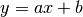
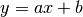
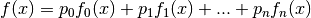
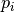

Pauli matrices¶
The wikipedia http://en.wikipedia.org/wiki/Pauli_matrices page will remember you what the Pauli matrices are.
In quantum mechanics, Hamiltonian of a two level system can be described using a linear combination of Pauli matrices (vector part) and the Id matrice (scalar part).
- Create a class that can be used to describe such a linear combination
- Implements addition, substraction and multiplication
- Implements the exponential (we can create an __exp__ method of the object and modify the function acordingly).
The answer of the first question is :
class PauliMatrices(object):
def __init__(self, scalar, vector=(0,0,0)):
self.scalar = scalar
self.vector = np.array(vector)
def __str__(self):
out = ''
if abs(self.scalar)!=0:
out+='{0:+}Id '.format(self.scalar)
for i,elm in enumerate(['x','y','z']):
if self.vector[i]!=0:
if isinstance(self.vector[i], numbers.Complex)\
and out!='':
out += '+ '
out+='{0:+}*σ{elm} '.format(self.vector[i], elm=elm)
return out
The __str__ method could be improved.
Solution
import numbers
import numpy as np
class PauliMatrices(object):
def __init__(self, scalar, vector=(0,0,0)):
self.scalar = scalar
self.vector = np.array(vector)
def __str__(self):
out = ''
if abs(self.scalar)!=0:
out+='{0:+}Id '.format(self.scalar)
for i,elm in enumerate(['x','y','z']):
if self.vector[i]!=0:
if isinstance(self.vector[i], numbers.Complex) and out!='':
out += '+ '
out+='{0:+}*σ{elm} '.format(self.vector[i], elm=elm)
return out
def __add__(self, other):
if isinstance(other, numbers.Number):
other = PauliMatrices(other)
if isinstance(other, PauliMatrices):
return PauliMatrices(self.scalar+other.scalar, self.vector + other.vector)
raise NotImplemented
def __sub__(self, other):
return self + (-other)
def __neg__(self):
return self*(-1)
def __mul__(self, other):
if isinstance(other, numbers.Number):
return PauliMatrices(self.scalar*other, self.vector*other)
if isinstance(other, PauliMatrices):
s = np.dot(self.vector, other.vector)
v = self.scalar*other.vector + self.vector*other.scalar + 1J*np.cross(self.vector, other.vector)
return PauliMatrices(s, v)
raise NotImplemented
def __rmul__(self, other):
if isinstance(other, numbers.Number):
return self*other
raise NotImplemented
def __truediv__(self, other):
return self * (1/other)
def __exp__(self):
a = np.linalg.norm(self.vector/1J)
n = self.vector/a
s = np.cos(a)
v = 1j*np.sin(a)*n
return np.exp(self.scalar)*PauliMatrices(s, v)
def exp(x):
if hasattr(x, '__exp__'):
return x.__exp__()
return np.exp(x)
sigma_x = PauliMatrices(0, (1,0,0))
sigma_y = PauliMatrices(0, (0,1,0))
sigma_z = PauliMatrices(0, (0,0,1))
Id = PauliMatrices(1, (0,0,0))
print sigma_x + sigma_y
print sigma_x - sigma_y
print sigma_x*sigma_y
print sigma_y*sigma_x
print exp(1J*sigma_x*np.pi/2)
Data analysis¶
The idea is to create a class used for data analysis. In this example we will use simple linea regression : the experimental data  and
and  will be fitted by the function .
will be fitted by the function .
In order to calculate the value of a and b we use the following :
det = ((x - x.mean())**2).mean()
a = ((x*y).mean() - x.mean()*y.mean() )/det
b = y.mean() - a*x.mean()
- This class should be able to give the value of a and b but also to plot the data with the fit function. Furthermore, you should be possible to subclass the class to customize the default plot parameters such as the title, markers or label.
- Rewrite your code in order to separate what is generic to any linear regression and to first order regression. Now write three classes : Regression, FirstOrderRegression and SecondOrderRegression
- A linear regression is a fit by a function like :

One can find on wikipedia the formula to obtain the  from x and y.
Write a GenericRegression class such that one can customize the function using, for example, the following code :
class MyRegression(GenericRegression):
reression_order = 2
@staticmethod
def fit_function(x, p):
return p[0] + p[1]*x + p[2]*exp(-x)
The @staticmethod decorator is used to specify that the fit_function is a data attribute and not a method (its first parameter should not be replaced by the instance).
Solution
import numpy as np
import matplotlib.pyplot as plt
class Regression(object):
def __init__(self, x, y=None):
if y is None:
y = x
x = np.arange(len(y))
self.x = np.array(x)
self.y = np.array(y)
data_marker = 'o'
data_linestyle = ''
data_legend = 'data'
def plot_data(self, fig_num=None,**kwd):
if fig_num is not None:
plt.figure(fig_num)
kwd['marker'] = kwd.get('marker', self.data_marker)
kwd['linestyle'] = kwd.get('linestyle', self.data_linestyle)
kwd['label'] = self.data_legend
plt.plot(x, y, **kwd)
def get_regression_parameter(self):
det = ((x - x.mean())**2).mean()
a = ((x*y).mean() - x.mean()*y.mean() )/det
b = y.mean() - a*x.mean()
self._regression_parameter = (a,b)
@property
def regression_parameter(self):
if not hasattr(self, '_regression_parameter'):
self.get_regression_parameter()
return self._regression_parameter
@property
def a(self):
return self.regression_parameter[0]
@property
def b(self):
return self.regression_parameter[1]
def evaluate_fit(self, x):
return self.a*x + self.b
fit_marker = ''
fit_linestyle = '-'
fit_legend = 'fit'
def plot_fit(self, fig_num=None,**kwd):
if fig_num is not None:
plt.figure(fig_num)
kwd['marker'] = kwd.get('marker', self.fit_marker)
kwd['linestyle'] = kwd.get('linestyle', self.fit_linestyle)
kwd['label'] = self.data_legend
x = np.linspace(self.x.min(), self.x.max())
y = self.evaluate_fit(x)
plt.plot(x,y,**kwd)
xlabel = None
ylabel = None
title = 'Regression'
disp_legend = True
def plot(self, fig_num=None, xlabel=None, ylabel=None, disp_legend=None, title=None, clear=True, **kwd):
if clear:
plt.clf()
kwd['fig_num'] = fig_num
self.plot_data(**kwd)
self.plot_fit(**kwd)
xlabel = xlabel if xlabel is not None else self.xlabel
ylabel = ylabel if ylabel is not None else self.ylabel
if xlabel is not None:
plt.xlabel(xlabel)
if ylabel is not None:
plt.ylabel(ylabel)
disp_legend = disp_legend if disp_legend is not None else self.disp_legend
if disp_legend:
plt.legend(loc='best')
title = title if title is not None else self.title
if title is not None:
plt.title(title.format(self=self))
class FrequencyCalibration(Regression):
xlabel = 'Voltage [V]'
ylabel = 'Frequency [Hz]'
title = 'Frequency calibration'
if __name__=='__main__':
plt.ion()
x = np.linspace(-1, 2)
y = .23 + 3.14*x + np.random.normal(size=len(x))